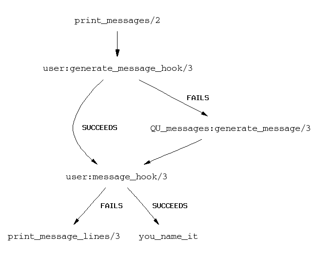

The message facility design is based on transforming
message terms to lists of format commands according to
definite clause grammars. The format commands are processed by
print_message_lines/3 to become the message text.
For information about format/2, see ref-iou-cou-fou in the
input/output section of this manual. Definite clause grammars are
described in ref-gru.
This design has the advantage of being able to utilize a relatively small list of message terms, each of which generates a set of related messages, and it gives the translator or other user explicit control over the order in which variables are referred to in the translated/customized message.
In release 3, all output from Prolog is represented internally as terms, called message terms. These terms consist of a functor that names the message, and arguments that give information about the particulars. For example, these message terms underlie the messages given in the overview:
type_error(is(_, number, apples + oranges), 2, number, apples) (1)
debug_message(leap) (2)
advice(no_preds, '', predicate_family(user:f)) (3)
version(3.5, 'Sun-4, SunOS 5.5') (4)
The message generator is defined in the file:
messages(language('QU_messages.pl'))
It associates such message
terms with the corresponding messages. This is accomplished by a
series of default clauses for generate_message/3 within the module.
This section will explain and exemplify various ways available to
customize these messages.
In addition to the message generator, the message facility consists of
a set of built-in predicates & hooks. Once an event is correlated
with a call to print_message/2, either by Quintus Prolog or by user code,
these procedures can be used as shown in the following figure to
customize system messages, or use the underlying message terms as
triggers for other events.

The heavy arrows in the diagram trace the default path of a message term through the message generator.
To print a message, call print_message/2. This may be done
explicitly in your code. Often, however, it is called by the system.
For example, an unhandled exception message E will always be
captured at the Prolog top level, where it calls
print_message(error, E).
Prolog first tries calling user:generate_message_hook/3 to transform
a message term into textual form. If that fails, it then tries
'QU_messages':generate_message/3 instead. (If that also fails the
message term will simply be written out as if by write/1.)
There is one exception to this rule. Messages that fall into
the silent category do not go through generate_message_hook/3.
Once the text of the message, represented as a list of format
commands, is decided, Prolog calls user:message_hook/3. If this
succeeds, nothing else is done; otherwise, print_message_lines/3
is called to print the message. silent messages just go through
message_hook/3 but even if it does not succeed, it is not
passed to print_message_lines/3.